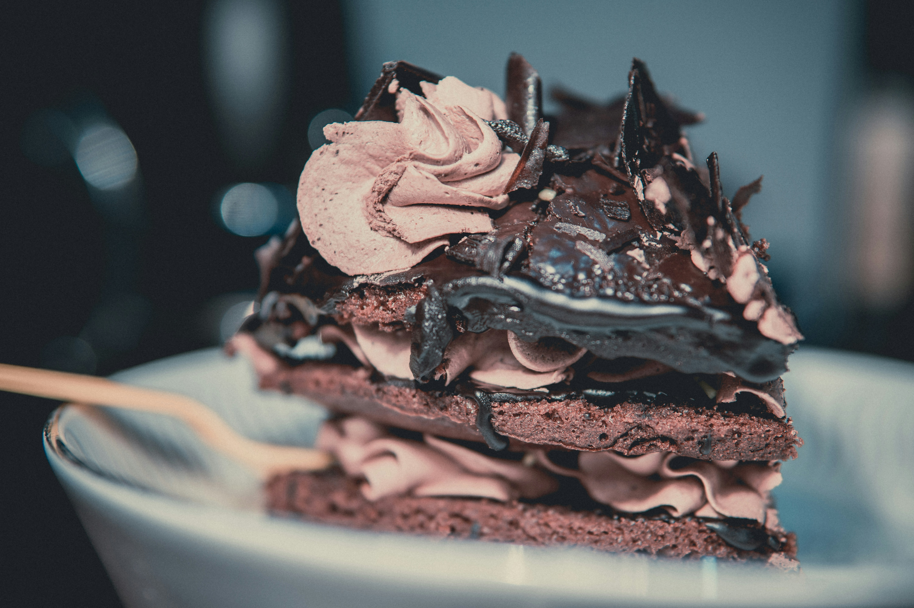

Classic Pancakes

Ingridients
- 1 cup all-purpose flour
- 2 tablespoons sugar
- 1 teaspoon baking powder
- 1 teaspoon vanilla extract (optional)
- ½ teaspoon baking soda
- ¼ teaspoon salt
- cup milk
- 1 egg
- 2 tablespoons melted butter (or oil)
Steps
- Mix dry ingredients
In a bowl, whisk together flour, sugar, baking powder, baking soda, and salt.
- Mix wet ingredients
In another bowl, whisk the milk, egg, melted butter, and vanilla.
- Combine
Pour the wet mixture into the dry ingredients. Stir gently until just combined.
Small lumps are okay—don't overmix.
- Heat a non-stick pan or griddle over medium heat. Lightly grease with butter or oil.
- Pour about ¼ cup batter per pancake onto the pan.
Cook until bubbles form on the surface and the edges look set (about 1 - 2 minutes).
- Flip and cook the other side until golden brown (about 1 minute).
- Stack them up and serve warm with butter, syrup, fruit, or whatever you love.